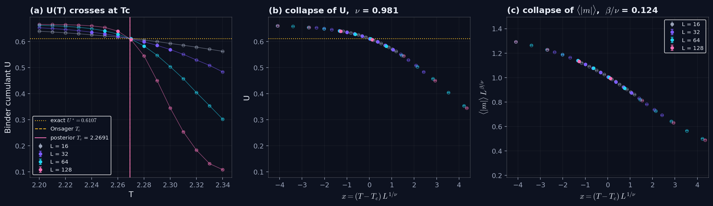
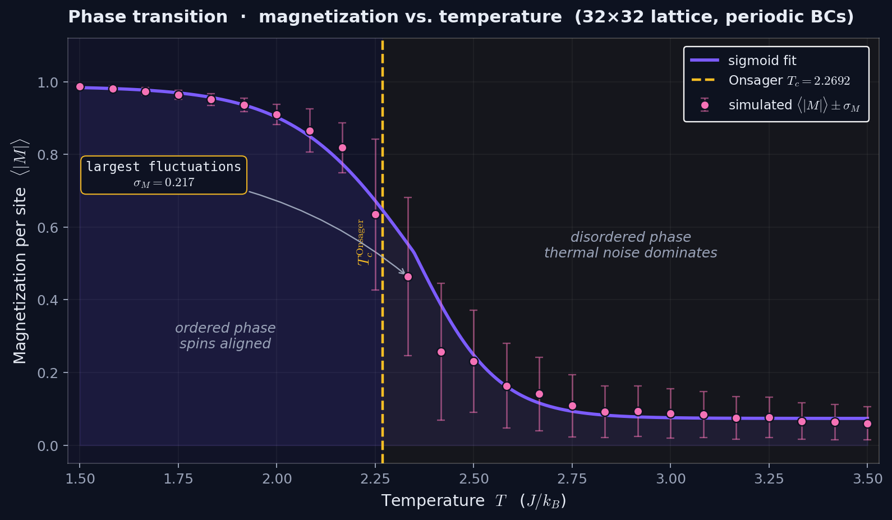
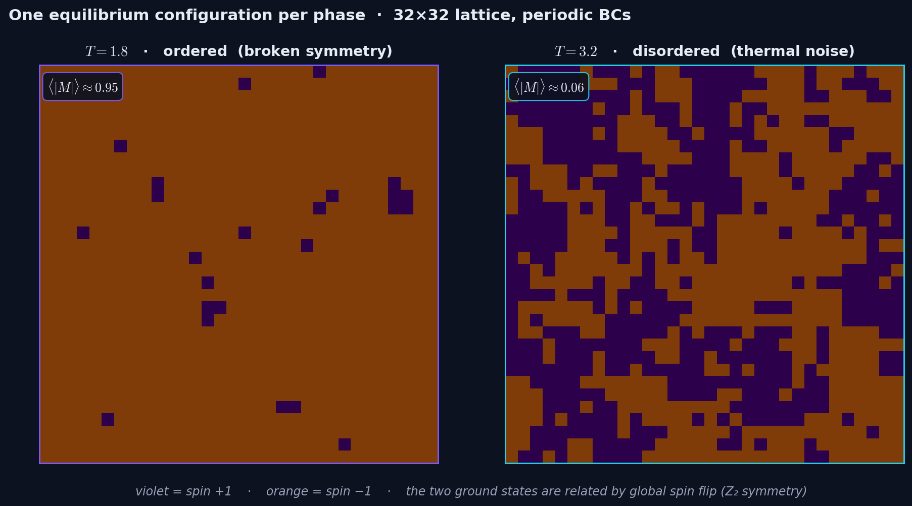

<!doctype html>
<html lang="en">
<head>
<meta charset="utf-8" />
<meta name="viewport" content="width=device-width, initial-scale=1" />
<title>01 · Ising Bayesian · Camilo Rozo</title>
<link rel="icon" type="image/svg+xml" href="/favicon.svg?v=2" />
<link rel="preconnect" href="https://fonts.googleapis.com">
<link rel="preconnect" href="https://fonts.gstatic.com" crossorigin>
<link href="https://fonts.googleapis.com/css2?family=Inter:wght@400;500;600;800&family=Space+Grotesk:wght@500;700&family=JetBrains+Mono:wght@400;500&display=swap" rel="stylesheet">
<link rel="stylesheet" href="../assets/styles.css" />
<link rel="stylesheet" href="https://cdn.jsdelivr.net/npm/katex@0.16.11/dist/katex.min.css">
<script defer src="https://cdn.jsdelivr.net/npm/katex@0.16.11/dist/katex.min.js"></script>
<script defer src="https://cdn.jsdelivr.net/npm/katex@0.16.11/dist/contrib/auto-render.min.js" onload="renderMathInElement(document.body,{delimiters:[{left:'\\[',right:'\\]',display:true},{left:'\\(',right:'\\)',display:false}],throwOnError:false})"></script>
</head>
<body class="text-balanced">

<div class="bg-stage"></div>
<div class="bg-grid"></div>
<div class="bg-noise"></div>
<div class="cursor-glow" id="cursorGlow"></div>

<nav class="topnav">
  <a href="../index.html" class="brand">// CAMILO ROZO</a>
  <ul>
    <li><a class="menu" href="../index.html#projects">Projects</a></li>
    <li><a class="menu" href="../results.html">Results</a></li>
    <li><a class="menu" href="../index.html#contact">Contact</a></li>
  </ul>
</nav>

<header class="detail-hero">
  <div class="container">
    <a href="../index.html#projects" class="back-link reveal">← Back to projects</a>
    <div class="badges reveal" style="margin-top: 28px;">
      <span class="badge">01 / 05</span>
      <span class="badge domain">Statistical mechanics · Bayesian</span>
      <span class="badge status-done">Completed</span>
    </div>
    <h1 class="reveal"><span class="grad">Bayesian Inference on the 2D Ising Model</span></h1>
    <p class="tagline reveal">A pipeline that simulates the Ising spin lattice with Monte Carlo, infers the critical temperature and exponents with MCMC, first from a single lattice and then by finite-size scaling across four lattice sizes, and benchmarks the results against the exact Onsager (1944) solution.</p>
    <div class="cta-row reveal">
      <a href="#live-demo" class="btn btn-primary">Try the live demo ↓</a>
      <a href="https://github.com/crozol/01-ising-bayesian" class="btn btn-ghost" target="_blank" rel="noopener">Code on GitHub →</a>
      <a href="#results" class="btn btn-ghost">See results</a>
    </div>
  </div>
</header>

<section class="content-section">
  <div class="container">
    <div class="section-eyebrow reveal">// Overview</div>
    <h2 class="reveal">About this project</h2>
    <div class="two-col">
      <div class="reveal">
        <p>This project combines <strong style="color:var(--fg-0)">real statistical physics</strong>, <strong style="color:var(--fg-0)">applied Bayesian statistics</strong> and <strong style="color:var(--fg-0)">end-to-end scientific Python code</strong>. The 2D Ising model is ideal: it has a nontrivial phase transition and, at the same time, an exact analytical solution against which any numerical code can be validated.</p>
        <p>A Numba-accelerated Metropolis simulator generates the \(M(T)\) curve of a 32×32 lattice, and a Bayesian model fits the critical power law to it. That first fit turns out not to be a usable estimator: on the ordered side the simulation matches Onsager's exact magnetisation, but a pure power law does not describe it, and \(T_c\) comes out 0.1 too high while \(\beta\) moves with the fit window.</p>
        <p>The second analysis uses what the finite lattice does rather than ignoring it. A joint Bayesian finite-size-scaling fit of the Binder cumulant and the magnetisation for \(L = 16, 32, 64\), with flat priors, recovers \(T_c\), \(\nu\) and \(\beta\) with the exact values inside their 95% intervals.</p>
        <p>Everything runs in a single command: <code>python main.py</code> executes both simulations, both inferences, and generates all final figures; every run is seeded.</p>
      </div>
      <div class="theory-card reveal">
        <h3>Core formulas</h3>
        <p style="margin-top: 0;">System energy:</p>
        <div class="formula">\[ E = -J \sum_{\langle i,j \rangle} s_i\, s_j \]</div>
        <p>Metropolis acceptance rule:</p>
        <div class="formula">\[ P(\text{flip}) = \min\!\left(1,\; e^{-\Delta E/T}\right) \]</div>
        <p>Power law near \(T_c\):</p>
        <div class="formula">\[ M(T) \approx \left(1 - T/T_c\right)^{\beta} \]</div>
        <p>Bayes theorem applied:</p>
        <div class="formula">\[ P(T_c, \beta \mid \text{data}) \;\propto\; P(\text{data} \mid T_c, \beta)\; P(T_c, \beta) \]</div>
        <p>Binder cumulant and finite-size scaling:</p>
        <div class="formula">\[ U = 1 - \frac{\langle m^4 \rangle}{3\langle m^2 \rangle^2}, \qquad U = f\!\left((T - T_c)\,L^{1/\nu}\right) \]</div>
        <div class="formula">\[ \langle |m| \rangle = L^{-\beta/\nu}\, g\!\left((T - T_c)\,L^{1/\nu}\right) \]</div>
        <p>Onsager's exact solution:</p>
        <div class="formula">\[ T_c = \frac{2}{\ln\!\left(1 + \sqrt{2}\right)} \approx 2.2692 \]</div>
        <div class="formula">\[ \beta = \tfrac{1}{8} = 0.125, \qquad \nu = 1 \]</div>
      </div>
    </div>
  </div>
</section>

<section class="content-section">
  <div class="container">
    <div class="section-eyebrow reveal">// Components</div>
    <h2 class="reveal">How it's built</h2>
    <p class="section-intro reveal">Seven pieces connected end-to-end. Each lives in its own module with a dedicated CLI.</p>

    <div class="two-col">
      <div class="info-card reveal">
        <h3>1 · Metropolis simulator</h3>
        <p><strong style="color:var(--fg-0)">Goal:</strong> sample equilibrium spin configurations at a given temperature \(T\).</p>
        <p><strong style="color:var(--fg-0)">How:</strong> each step picks a random site, proposes flipping its spin (\(s \to -s\)) and accepts with probability \(\min(1, e^{-\Delta E/T})\). A sweep = \(N^2\) proposed flips. The hot kernel is JIT-compiled via <code>@numba.njit</code> (~50× faster than plain NumPy, with pure-Python fallback).</p>
      </div>
      <div class="info-card reveal">
        <h3>2 · Temperature sweep</h3>
        <p><strong style="color:var(--fg-0)">Input:</strong> 25 temperatures in \(T \in [1.5,\, 3.5]\), covering both ordered and disordered regimes, on a 32×32 lattice.</p>
        <p><strong style="color:var(--fg-0)">Process:</strong> at each \(T\), 2000 thermalization sweeps (discarded) + 3000 measurement sweeps (averaged). <strong style="color:var(--fg-0)">Output:</strong> a CSV with \(\langle |M| \rangle\), its blocking standard error, and the energy, susceptibility and specific heat — the "observed dataset" for the single-size model.</p>
      </div>
      <div class="info-card reveal">
        <h3>3 · Single-size model</h3>
        <p><strong style="color:var(--fg-0)">Priors:</strong> \(T_c \sim \mathcal{N}(2.3,\, 0.3)\), \(\beta \sim \mathcal{U}(0.01,\, 0.5)\), \(\sigma \sim \text{HalfNormal}(0.1)\). The \(\beta\) prior is flat, so no knowledge of the exact \(1/8\) enters through it.</p>
        <p><strong style="color:var(--fg-0)">Likelihood:</strong> \(M_k \sim \mathcal{N}\big((1 - T_k/T_c)^{\beta},\, \sqrt{e_k^2 + \sigma^2}\big)\) when \(T_k &lt; T_c\), mean 0 above, with \(e_k\) the Monte Carlo error of each point and \(\sigma\) a discrepancy term for what the power law misses.</p>
      </div>
      <div class="info-card reveal">
        <h3>4 · MCMC sampling</h3>
        <p><strong style="color:var(--fg-0)">Config:</strong> 4 chains × (1000 tune + 5000 draws) = 20 000 posterior samples, drawn by a random-walk Metropolis-Hastings sampler written in NumPy; a PyMC NUTS backend is also available.</p>
        <p><strong style="color:var(--fg-0)">Output:</strong> the full joint posterior \(P(T_c, \beta, \sigma \mid \text{data})\). Convergence checks via ArviZ: \(\hat{R} \le 1.02\); ESS 332 for \(T_c\), 562 for \(\sigma\), and 187 for the slower-mixing \(\beta\), just under the usual 200.</p>
      </div>
      <div class="info-card reveal">
        <h3>5 · Is the single-size fit right?</h3>
        <p>Eight refits (fit window × likelihood × \(\beta\) prior), a comparison of the data with Onsager's exact magnetisation, and a fit with a free amplitude. They show that the power law, not the simulation, is the problem: a single lattice cannot determine \(\beta\) this way.</p>
      </div>
      <div class="info-card reveal">
        <h3>6 · Finite-size scaling</h3>
        <p><strong style="color:var(--fg-0)">Data:</strong> \(L = 8, 16, 32, 64\) at 15 temperatures near \(T_c\), 200 000 sweeps each, with block-jackknife errors on \(\langle |m| \rangle\) and the Binder cumulant \(U\).</p>
        <p><strong style="color:var(--fg-0)">Fit:</strong> both observables jointly as functions of \((T - T_c)L^{1/\nu}\), flat priors on \(T_c\), \(\nu\), \(\beta/\nu\); the scaling-function coefficients are integrated out analytically and the rest sampled with adaptive Metropolis.</p>
      </div>
      <div class="info-card reveal">
        <h3>7 · Final figures</h3>
        <p>Six PNGs saved by <code>src/plots.py</code>:</p>
        <ul style="margin: 8px 0 0; padding-left: 18px; color: var(--fg-1); font-size: 14px;">
          <li><code>snapshots.png</code>, <code>magnetization.png</code>, <code>observables.png</code> — the simulation</li>
          <li><code>posteriors.png</code>, <code>trace.png</code> — the single-size fit</li>
          <li><code>fss.png</code> — Binder crossing and data collapse</li>
        </ul>
      </div>
    </div>
  </div>
</section>

<section class="content-section">
  <div class="container">
    <div class="section-eyebrow reveal">// Skills demonstrated</div>
    <h2 class="reveal">What skills it certifies</h2>
    <p class="section-intro reveal">Each skill appears in a concrete piece of code, not as a generic claim.</p>

    <div class="skill-matrix reveal" style="margin-bottom: 32px;">
      <div class="skill-name">Scientific Python</div>
      <div class="skill-how">Vectorized Metropolis simulator organized in clean modules, with argparse CLI per script.</div>
      <div class="skill-name">Numba acceleration</div>
      <div class="skill-how"><code>@njit(cache=True)</code> kernel with transparent fallback if Numba isn't installed.</div>
      <div class="skill-name">Monte Carlo</div>
      <div class="skill-how">Metropolis-Hastings with periodic boundaries and separated thermalization + measurement.</div>
      <div class="skill-name">Bayesian inference</div>
      <div class="skill-how">Heteroscedastic likelihood with a model-discrepancy term; flat priors; sensitivity of the posterior to the fit window, likelihood and prior.</div>
      <div class="skill-name">MCMC (MH + adaptive MH)</div>
      <div class="skill-how">Random-walk and adaptive Metropolis written in NumPy, nuisance coefficients integrated out analytically; \(\hat{R}\), ESS and trace diagnostics via ArviZ.</div>
      <div class="skill-name">Finite-size scaling</div>
      <div class="skill-how">Binder-cumulant crossing and data collapse across four lattice sizes, with a systematics table over size sets and windows.</div>
      <div class="skill-name">Technical visualization</div>
      <div class="skill-how">\(M(T)\) curve with errors, posteriors with exact values overlaid, convergence trace plots.</div>
      <div class="skill-name">Scientific rigor</div>
      <div class="skill-how">Validation against Onsager (1944) and Yang (1952), including a check that separates a simulation error from a model error.</div>
      <div class="skill-name">Reproducibility</div>
      <div class="skill-how"><code>python main.py</code> runs the full pipeline end-to-end; every simulation is seeded, including Numba's internal RNG.</div>
    </div>

    <div class="skill-chip-row reveal">
      <span class="skill-chip">Python 3.11</span>
      <span class="skill-chip">NumPy</span>
      <span class="skill-chip">Numba</span>
      <span class="skill-chip">PyMC 5</span>
      <span class="skill-chip">ArviZ</span>
      <span class="skill-chip">Matplotlib</span>
      <span class="skill-chip">SciPy</span>
      <span class="skill-chip">NetCDF</span>
    </div>
  </div>
</section>

<section class="content-section">
  <div class="container">
    <div class="section-eyebrow reveal">// Structure</div>
    <h2 class="reveal">Project organization</h2>
    <pre class="code-tree reveal"><span class="folder">01-ising-bayesian/</span>
├── <span class="file">README.md</span>
├── <span class="file">requirements.txt</span>
├── <span class="file">main.py</span>                 <span class="comment"># end-to-end pipeline</span>
├── <span class="folder">src/</span>
│   ├── <span class="file">__init__.py</span>
│   ├── <span class="file">metropolis.py</span>       <span class="comment"># Numba-accelerated Metropolis simulator</span>
│   ├── <span class="file">bayesian.py</span>         <span class="comment"># single-size model: NumPy MH + PyMC NUTS</span>
│   ├── <span class="file">fss.py</span>              <span class="comment"># finite-size-scaling data: ⟨|m|⟩, Binder cumulant</span>
│   ├── <span class="file">fss_fit.py</span>          <span class="comment"># Bayesian finite-size-scaling fit</span>
│   └── <span class="file">plots.py</span>            <span class="comment"># publication-style static figures</span>
├── <span class="folder">scripts/</span>
│   ├── <span class="file">model_comparison.py</span> <span class="comment"># sensitivity of the single-size fit</span>
│   ├── <span class="file">fss_systematics.py</span>  <span class="comment"># FSS fit over size sets and windows</span>
│   ├── <span class="file">summarize.py</span>        <span class="comment"># posterior summary → JSON</span>
│   └── <span class="file">export_json.py</span>      <span class="comment"># samples + fit → JSON for portfolio charts</span>
├── <span class="folder">notebooks/</span>
│   └── <span class="file">explore.ipynb</span>       <span class="comment"># interactive walk-through of the pipeline</span>
├── <span class="folder">figures/</span>              <span class="comment"># tracked PNGs embedded in the README</span>
├── <span class="folder">data/</span>                 <span class="comment"># (gitignored) generated CSV + NetCDF</span>
└── <span class="folder">results/</span>              <span class="comment"># (gitignored) PNG staging</span></pre>
  </div>
</section>

<section class="content-section">
  <div class="container">
    <div class="section-eyebrow reveal">// Roadmap</div>
    <h2 class="reveal">Project status</h2>
    <ul class="roadmap reveal">
      <li class="done">Probabilistic model with a heteroscedastic likelihood and a flat prior on \(\beta\)</li>
      <li class="done">Metropolis simulator with Numba acceleration and periodic boundaries</li>
      <li class="done">Argparse CLI per module and end-to-end pipeline in <code>main.py</code></li>
      <li class="done">Dual sampler: pure-NumPy MH (default) + PyMC NUTS backend</li>
      <li class="done">Visualization module with all three publication-style figures</li>
      <li class="done">Full simulation (32×32 lattice · 25 temperatures · 5000 sweeps per \(T\))</li>
      <li class="done">MCMC run — diagnostics checked (\(\hat{R} \le 1.02\); ESS of \(\beta\) 187, just under 200)</li>
      <li class="done">Sensitivity study of the single-size fit and comparison with Onsager's exact \(M(T)\)</li>
      <li class="done">Finite-size scaling with the Binder cumulant (\(L = 8\)–\(64\)) and a systematics table</li>
      <li class="done">Polished static figures embedded in the README (GitHub-friendly)</li>
      <li class="done">Companion notebook <code>notebooks/explore.ipynb</code> — interactive walk-through</li>
    </ul>
  </div>
</section>

<section class="content-section" id="results">
  <div class="container">
    <div class="section-eyebrow reveal">// Results</div>
    <h2 class="reveal">Outputs and final metrics</h2>
    <p class="section-intro reveal">The first three tiles are the finite-size-scaling estimates (95% HDI); the fourth is the single-size fit. The interactive figures below show the single-size analysis, rendered from the actual MCMC samples; the finite-size-scaling figure follows them.</p>

    <!-- Headline metrics -->
    <div class="results-grid reveal" style="margin-bottom: 28px;">
      <div class="result-metric">
        <div class="value">Tc = 2.268</div>
        <div class="label">finite-size scaling, L = 16–64 · HDI [2.265, 2.271] · Onsager 2.2692</div>
      </div>
      <div class="result-metric">
        <div class="value">β = 0.113</div>
        <div class="label">finite-size scaling · HDI [0.101, 0.126] · exact 1/8</div>
      </div>
      <div class="result-metric">
        <div class="value">ν = 0.98</div>
        <div class="label">finite-size scaling · HDI [0.92, 1.05] · exact 1</div>
      </div>
      <div class="result-metric">
        <div class="value">Tc = 2.37</div>
        <div class="label">single 32×32 lattice, power-law fit · HDI [2.333, 2.439] excludes the exact value</div>
      </div>
    </div>

    <!-- Chart 1: M(T) -->
    <div class="chart-container reveal">
      <div id="chart-magnetization" style="width:100%; height:480px;">
        <div class="chart-loading">Loading magnetization curve…</div>
      </div>
      <div class="chart-caption"><strong>Fig 1</strong> · Simulated \(\langle |M| \rangle\) vs. temperature on a 32×32 lattice, with \(1\sigma\) error bars per temperature. Amber dashed line: Onsager's exact \(T_c\). The curve shows the characteristic second-order phase transition — sharp drop around \(T \approx 2.3\) with largest fluctuations at the transition.</div>
    </div>

    <!-- Chart 2: Posteriors -->
    <div class="chart-container reveal" style="margin-top: 24px;">
      <div id="chart-posteriors" style="width:100%; height:480px;">
        <div class="chart-loading">Loading posteriors…</div>
      </div>
      <div class="chart-caption"><strong>Fig 2</strong> · Marginal posteriors of \(T_c\) (left) and \(\beta\) (right) built from 20 000 MCMC samples (4 chains × 5000 draws). Shaded band: 95% HDI. Pink solid line: posterior mean. Amber dashed line: Onsager's exact value. \(T_c\)'s HDI misses the exact value by about 0.1; \(\beta\)'s is wide and, as the analysis below shows, moves with the fit window.</div>
    </div>

    <!-- Chart 3: Trace plots -->
    <div class="chart-container reveal" style="margin-top: 24px;">
      <div id="chart-trace" style="width:100%; height:620px;">
        <div class="chart-loading">Loading trace plots…</div>
      </div>
      <div class="chart-caption"><strong>Fig 3</strong> · Per-chain traces across 5000 post-burn iterations (4 chains overlaid). Chains exploring the same band = good mixing. Use the legend to isolate a chain. No visible drift or stuck regions.</div>
    </div>

    <div class="results-grid reveal" style="grid-template-columns: 1fr; margin-top: 24px;">
      <div class="result-figure">
        
        <div class="caption"><strong>Fig 4 · Finite-size scaling.</strong> (a) Binder cumulant against \(T\) for \(L = 8\)–\(64\): the curves cross at \(T_c\). (b, c) With the fitted \(T_c\), \(\nu\) and \(\beta/\nu\), the cumulant and the rescaled magnetisation from all sizes fall on one curve. Hollow points lie outside the fitted sizes or temperature window.</div>
      </div>
    </div>

    <noscript>
      <div class="results-grid" style="grid-template-columns: 1fr; margin-top: 24px;">
        <div class="result-figure">
          
          <div class="caption">Fig 1 · static fallback (enable JavaScript for interactive charts)</div>
        </div>
      </div>
    </noscript>
  </div>
</section>

<section class="content-section" id="analysis">
  <div class="container">
    <div class="section-eyebrow reveal">// Analysis</div>
    <h2 class="reveal">Results analysis</h2>
    <p class="section-intro reveal">Why there's no accuracy or confusion matrix here, which metrics <em>do</em> apply, and what the numbers actually mean.</p>

    <!-- Subsection: What kind of problem -->
    <h3 class="reveal" style="margin-top: 12px;">What type of problem is this?</h3>
    <p class="reveal" style="color: var(--fg-1); max-width: 820px;">The natural reflex is to ask for accuracy, precision/recall, or a confusion matrix. None of those apply here. This project isn't a classifier — it's a <strong style="color:var(--fg-0)">parameter inference</strong> problem: given a noisy \(M(T)\) curve, what is the joint probability distribution of the physical parameters \((T_c, \beta, \sigma)\)?</p>

    <table class="analysis-table reveal">
      <thead>
        <tr>
          <th>Problem type</th>
          <th>Output</th>
          <th>Typical metrics</th>
        </tr>
      </thead>
      <tbody>
        <tr>
          <td>Classification</td>
          <td>discrete class label</td>
          <td>accuracy, precision, recall, F1, ROC-AUC, confusion matrix</td>
        </tr>
        <tr>
          <td>Regression</td>
          <td>continuous number</td>
          <td>MSE, MAE, R², RMSE</td>
        </tr>
        <tr>
          <td class="highlight">Parameter inference (this project)</td>
          <td>posterior distribution over parameters</td>
          <td>HDI, \(\hat{R}\), ESS, posterior predictive checks, ground-truth validation</td>
        </tr>
      </tbody>
    </table>

    <!-- Subsection: Evaluation methodology -->
    <h3 class="reveal" style="margin-top: 40px;">Evaluation methodology</h3>
    <p class="reveal" style="color: var(--fg-1); max-width: 820px;">Four layers stacked together — each answers a different question.</p>

    <div class="two-col" style="margin-top: 16px;">
      <div class="info-card reveal">
        <h3>① Point estimate</h3>
        <p>Posterior mean as a summary value. From finite-size scaling, \(T_c\) is <strong style="color:var(--fg-0)">2.268</strong> and \(\beta\) is <strong style="color:var(--fg-0)">0.113</strong>. Never reported alone — always with its uncertainty.</p>
      </div>
      <div class="info-card reveal">
        <h3>② Uncertainty quantification</h3>
        <p>Posterior standard deviation and <strong style="color:var(--fg-0)">95% HDI</strong> (Highest Density Interval) — the densest region containing 95% of the posterior mass. This is the Bayesian analogue of the confidence interval.</p>
      </div>
      <div class="info-card reveal">
        <h3>③ MCMC convergence</h3>
        <p><strong style="color:var(--fg-0)">\(\hat{R}\) (Gelman-Rubin)</strong> compares between-chain vs. within-chain variance (target: ≤ 1.01). <strong style="color:var(--fg-0)">ESS</strong> is the effective number of independent samples after accounting for autocorrelation. <strong style="color:var(--fg-0)">Acceptance rate</strong> of MH proposals (target: 20–40% for \(\mathbb{R}^3\)).</p>
      </div>
      <div class="info-card reveal">
        <h3>④ Ground-truth validation</h3>
        <p>The Ising 2D model has an <strong style="color:var(--fg-0)">exact analytical solution</strong> (Onsager 1944). Whether the 95% HDI brackets the exact value is a direct check — provided it also holds when the modelling choices change, which is what the sensitivity and systematics tables test.</p>
      </div>
    </div>

    <!-- Subsection: Numeric rubric -->
    <h3 class="reveal" style="margin-top: 40px;">Metrics achieved vs. thresholds</h3>
    <table class="analysis-table reveal">
      <thead>
        <tr>
          <th>Metric</th>
          <th>What it measures</th>
          <th>Threshold</th>
          <th>Result</th>
        </tr>
      </thead>
      <tbody>
        <tr>
          <td colspan="4" class="highlight">Single 32×32 lattice, power-law fit</td>
        </tr>
        <tr>
          <td>\(\hat{R}\) max</td>
          <td>chain convergence (Gelman-Rubin)</td>
          <td>≤ 1.01 ideal · ≤ 1.05 tolerable</td>
          <td class="check">1.02 ✓</td>
        </tr>
        <tr>
          <td>ESS_bulk min</td>
          <td>effective independent samples</td>
          <td>≥ 200</td>
          <td class="warn">187 (\(\beta\)) — just short</td>
        </tr>
        <tr>
          <td>Acceptance rate</td>
          <td>MH proposals accepted</td>
          <td>20–40% for \(\mathbb{R}^3\)</td>
          <td class="check">26–31% ✓</td>
        </tr>
        <tr>
          <td>\(T_c\) · 95% HDI</td>
          <td>ground-truth validation</td>
          <td>should contain 2.2692</td>
          <td class="warn">[2.333, 2.439] — misses by ~0.1</td>
        </tr>
        <tr>
          <td>\(\beta\) · 95% HDI</td>
          <td>ground-truth validation</td>
          <td>should contain 0.125, robustly</td>
          <td class="warn">[0.048, 0.152] — contains it, but drops to [0.025, 0.071] on \(T &lt; 2.25\)</td>
        </tr>
        <tr>
          <td colspan="4" class="highlight">Finite-size scaling, \(L = 16, 32, 64\)</td>
        </tr>
        <tr>
          <td>\(\hat{R}\) / ESS_bulk</td>
          <td>chain convergence</td>
          <td>≤ 1.01 / ≥ 200</td>
          <td class="check">1.00 / &gt; 3 000 ✓</td>
        </tr>
        <tr>
          <td>\(T_c\) · 95% HDI</td>
          <td>ground-truth validation</td>
          <td>should contain 2.2692</td>
          <td class="check">[2.265, 2.271] ✓</td>
        </tr>
        <tr>
          <td>\(\nu\) · 95% HDI</td>
          <td>ground-truth validation</td>
          <td>should contain 1</td>
          <td class="check">[0.92, 1.05] ✓</td>
        </tr>
        <tr>
          <td>\(\beta\) · 95% HDI</td>
          <td>ground-truth validation</td>
          <td>should contain 0.125</td>
          <td class="check">[0.101, 0.126] ✓ (near the edge)</td>
        </tr>
      </tbody>
    </table>

    <!-- Subsection: interpretation -->
    <h3 class="reveal" style="margin-top: 40px;">Interpretation</h3>
    <p class="reveal" style="color: var(--fg-1); max-width: 820px;">Three observations, in the order the analysis found them.</p>

    <div class="analysis-callout reveal">
      <h4>1 · The single-size fit is not a usable estimator</h4>
      <p>Its \(T_c\) is 0.1 too high, and its \(\beta\) depends on the fit window: over all temperatures \(\beta = 0.094\), on the ordered side alone \(\beta = 0.04\). The heteroscedastic likelihood and the flat prior barely change this, because the fitted discrepancy \(\sigma \approx 0.11\) dwarfs the Monte Carlo errors. The simulation is not at fault: below \(T = 2.25\) it matches Onsager's exact magnetisation to within 1.8 standard errors. The pure power law is only the leading term of that curve, and near \(T_c\) the finite lattice rounds the transition and leaves a \(1/L\) tail above it. With the amplitude fixed at its exact value and the first correction of Onsager's expansion, \(M = A t^eta (1 + bt)\), the ordered-side data give \(eta = 0.124\) [0.122, 0.127] and \(T_c = 2.262\). This is a consistency check, not a measurement: \(A\) and the form of the correction come from the exact solution.</p>
    </div>

    <div class="analysis-callout reveal">
      <h4>2 · Finite-size scaling recovers \(T_c\), \(\nu\) and \(\beta\)</h4>
      <p>Modelling how the observables change with \(L\), instead of ignoring it, gives \(T_c = 2.268\) [2.265, 2.271], \(\nu = 0.98\) [0.92, 1.05] and \(\beta = 0.113\) [0.101, 0.126] with flat priors, and a Binder crossing value \(U^* = 0.613\) against the exact 0.6107. \(T_c\) is stable to ±0.005 across every size set and window tried; \(\nu\) and \(\beta\) move by more than their statistical intervals (\(\nu\) over 0.95–1.39, \(\beta\) over 0.088–0.146), so those intervals understate the uncertainty of the exponents from lattices up to \(L = 64\).</p>
    </div>

    <div class="analysis-callout reveal">
      <h4>3 · The samplers are healthy</h4>
      <p>The single-size chains reach \(\hat{R} \le 1.02\), with \(\beta\) mixing slowest (ESS 187); the finite-size-scaling chains reach \(\hat{R} = 1.00\) with ESS above 3 000, because the six scaling-function coefficients are integrated out analytically and only five parameters are sampled. Convergence shows the posteriors were sampled correctly — it says nothing about whether the model behind them is right, which is why both analyses are needed.</p>
    </div>

  </div>
</section>

<section class="content-section" id="live-demo">
  <div class="container">
    <div class="section-eyebrow reveal">// Live demo</div>
    <h2 class="reveal">Run the simulation in your browser</h2>
    <p class="section-intro reveal">The Monte Carlo half of this project, made interactive. The same Numba-accelerated Metropolis sampler runs live as a Streamlit app on Hugging Face Spaces — nothing is pre-computed. Set a <strong style="color:var(--fg-0)">temperature</strong> and a <strong style="color:var(--fg-0)">lattice size</strong> and watch the spins settle into an ordered or disordered phase; then sample several temperatures with <strong style="color:var(--fg-0)">Add point to \(M(T)\)</strong> and trace the magnetization collapsing across the Onsager critical temperature \(T_c \approx 2.269\).</p>
    <div class="cta-row reveal" style="margin: 12px 0 24px;">
      <a href="https://huggingface.co/spaces/crozol/ising-bayesian-demo" class="btn btn-primary" target="_blank" rel="noopener">Open in new tab ↗</a>
      <a href="https://github.com/crozol/01-ising-bayesian" class="btn btn-ghost" target="_blank" rel="noopener">Source code →</a>
    </div>
    <div class="reveal" style="border: 1px solid var(--border); border-radius: 12px; overflow: hidden; background: var(--bg-1);">
      <iframe
        src="https://crozol-ising-bayesian-demo.hf.space"
        title="2D Ising · Monte Carlo explorer — live Streamlit demo"
        loading="lazy"
        width="100%"
        height="820"
        frameborder="0"
        style="display: block; border: 0;"
        allow="fullscreen"
      ></iframe>
    </div>
    <p class="caption reveal" style="margin-top: 12px;">First load can take 20–40 s while the Hugging Face Space cold-starts, plus a one-time Numba compilation on the first simulation; subsequent interactions are fast. If the iframe is blocked by your browser, use the <a href="https://huggingface.co/spaces/crozol/ising-bayesian-demo" target="_blank" rel="noopener">Open in new tab</a> link above.</p>

    <noscript>
      <div class="results-grid" style="grid-template-columns: 1fr; margin-top: 24px;">
        <div class="result-figure">
          
          <div class="caption">Static fallback: two equilibrium lattices, one ordered and one disordered. Enable JavaScript and iframes for the interactive simulator.</div>
        </div>
      </div>
    </noscript>
  </div>
</section>

<footer>
  <div class="container">
    <span>&copy; <span id="year"></span> · Camilo Rozo.</span>
    <span class="footer-sub">All rights reserved</span>
  </div>
</footer>

<script src="../assets/portfolio.js"></script>
<script src="https://cdn.plot.ly/plotly-basic-2.35.0.min.js" charset="utf-8"></script>
<script src="../assets/charts/01-ising.js" defer></script>
</body>
</html>
